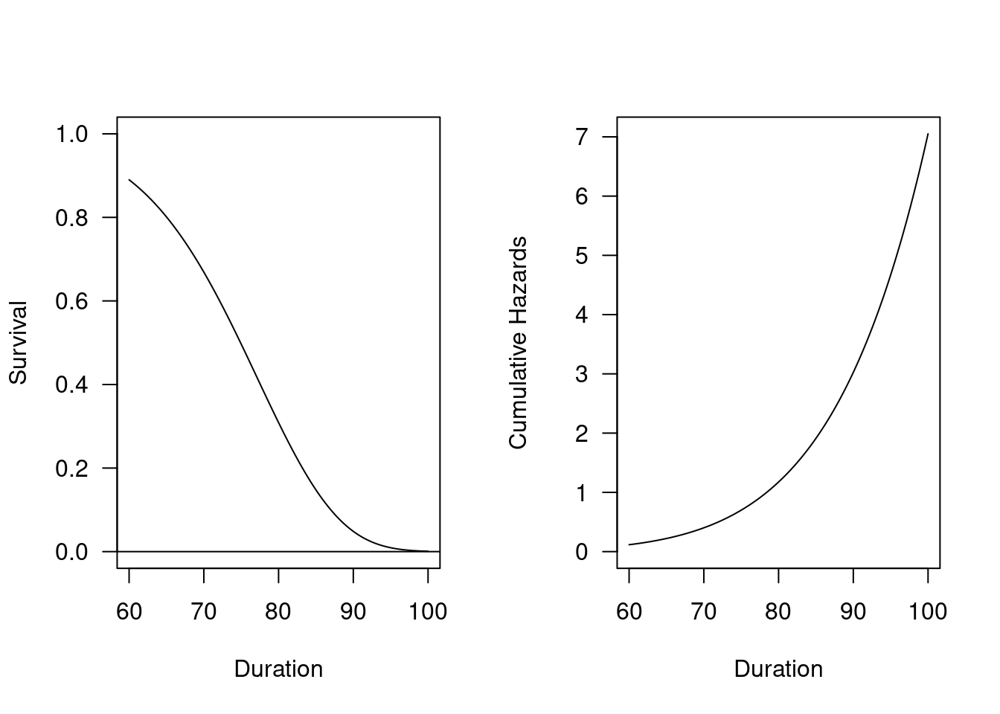

Chapter 5 Survival models: specification, estimation, and interpretation
Let’s think some some feasible models addressing how the survival varies by sex, region, and infant mortality of the cohort, using oldmort01 dataset.
Here are some possible models depending on the outcome:
Descriptive models for survival time
Linear or Poisson regression on the ‘survival time’, which can be defined as the time of death (i.e., ‘exit’). We may need to subset only those who died, potentially resulting in considerable loss of data.
Logistic regression for the event, death. How would you incorporate “survival time” in this model?
Semiparametric survival regression models
parametric survival regression models
5.1 Nonparametric models
Let’s fit Kaplan-Meier (KM) and Nelson-Aalen (NA) estimators using the oldmort01 dataset from the eha package.
- Kaplan-Meier (KM) survival estimator
## KM
bysex_KM <- survfit(Surv(enter, exit, event) ~ sex,
data=oldmort01,
conf.type="log-log")
## Tables
bysex_KM## Call: survfit(formula = Surv(enter, exit, event) ~ sex, data = oldmort01,
## conf.type = "log-log")
##
## records n events median 0.95LCL 0.95UCL
## sex=male 2884 1390 854 75.1 74.3 75.6
## sex=female 3611 1833 1117 76.7 76.1 77.1##summary(bysex)
summary(bysex_KM, times=c(60, 65, 70, 75, 80, 85, 90, 95, 100, 105, 110)) # add time points## Call: survfit(formula = Surv(enter, exit, event) ~ sex, data = oldmort01,
## conf.type = "log-log")
##
## sex=male
## time n.risk n.event survival std.err lower 95% CI upper 95% CI
## 60 1390 0 1.00000 0.00000 1.000000 1.0000
## 65 1017 183 0.85817 0.00974 0.837865 0.8761
## 70 697 168 0.70232 0.01352 0.674905 0.7279
## 75 428 184 0.50490 0.01576 0.473598 0.5353
## 80 191 171 0.28095 0.01561 0.250745 0.3119
## 85 55 105 0.10892 0.01237 0.086192 0.1346
## 90 12 34 0.03311 0.00841 0.019374 0.0526
## 95 1 8 0.00392 0.00381 0.000404 0.0197
##
## sex=female
## time n.risk n.event survival std.err lower 95% CI upper 95% CI
## 60 1833 0 1.0000 0.00000 1.000000 1.00000
## 65 1416 166 0.9022 0.00723 0.886989 0.91541
## 70 1034 205 0.7610 0.01094 0.738691 0.78161
## 75 669 238 0.5736 0.01343 0.546771 0.59938
## 80 318 236 0.3477 0.01415 0.320058 0.37547
## 85 115 167 0.1527 0.01192 0.130179 0.17687
## 90 27 80 0.0380 0.00705 0.025840 0.05359
## 95 5 21 0.0075 0.00333 0.002894 0.01662
## 100 1 4 0.0015 0.00150 0.000153 0.00812- Nelson-Aalen (NA) estimator
## NA
bysex_NA <- survfit(Surv(enter, exit, event) ~ sex,
data=oldmort01,
conf.type="log-log",
type="fh") # an option for NA estimator
## Tables
bysex_NA## Call: survfit(formula = Surv(enter, exit, event) ~ sex, data = oldmort01,
## conf.type = "log-log", type = "fh")
##
## records n events median 0.95LCL 0.95UCL
## sex=male 2884 1390 854 75.1 74.3 75.6
## sex=female 3611 1833 1117 76.7 76.1 77.1##summary(bysex)
summary(bysex_NA, times=c(60, 65, 70, 75, 80, 85, 90, 95, 100, 105, 110)) # add time points## Call: survfit(formula = Surv(enter, exit, event) ~ sex, data = oldmort01,
## conf.type = "log-log", type = "fh")
##
## sex=male
## time n.risk n.event survival std.err lower 95% CI upper 95% CI
## 60 1390 0 1.00000 0.00000 1.00000 1.0000
## 65 1017 183 0.85822 0.00974 0.83793 0.8762
## 70 697 168 0.70245 0.01352 0.67504 0.7280
## 75 428 184 0.50514 0.01575 0.47385 0.5356
## 80 191 171 0.28138 0.01561 0.25118 0.3123
## 85 55 105 0.10962 0.01239 0.08685 0.1353
## 90 12 34 0.03418 0.00849 0.02024 0.0538
## 95 1 8 0.00583 0.00449 0.00101 0.0216
##
## sex=female
## time n.risk n.event survival std.err lower 95% CI upper 95% CI
## 60 1833 0 1.00000 0.00000 1.000000 1.00000
## 65 1416 166 0.90220 0.00723 0.887022 0.91543
## 70 1034 205 0.76103 0.01094 0.738776 0.78169
## 75 669 238 0.57371 0.01342 0.546935 0.59953
## 80 318 236 0.34799 0.01415 0.320348 0.37575
## 85 115 167 0.15315 0.01193 0.130627 0.17734
## 90 27 80 0.03863 0.00710 0.026391 0.05434
## 95 5 21 0.00824 0.00347 0.003349 0.01759
## 100 1 4 0.00228 0.00183 0.000381 0.00911- Overall survival and hazard curves for the population
## Plots
par(mfrow = c(1, 2))# Two panels, "one row, two columns".
with(oldmort01, plot(Surv(enter, exit, event), fun = "cumhaz",
main = "Cumulativa hazards function",
xlab = "Duration"))
with(oldmort01, plot(Surv(enter, exit, event),
main = "Survival function",
xlab = "Duration"))
- Comparison between Male and Female
# Plots
par(mfrow = c(1, 2))# Two panels, "one row, two columns".
plot(bysex_KM,
ylab = "Survival probability",
xlab = "Time",
mark.time = T,
main="Kaplan-Meier survival curve")
legend("topleft", c("Male","Female"),
lty=c("solid","dashed"),
col=c("black","red"))
#abline(h = 0.5, col = "sienna", lty = 3)
plot(bysex_NA,
ylab = "Cumulative hazard",
xlab = "Time",
mark.time = T,
fun="cumhaz",
main="Nelson-Aalen cumulative hazard curve")
legend("topleft", c("Male","Female"),
lty=c("solid","dashed"),
col=c("black","red"))
#abline(h = 0.5, col = "sienna", lty = 3)- For a better plot for comparisons
library(ggfortify)
library(ggplot2)
autoplot(bysex_KM,
ylab = "Survival probabilities",
xlab = "Survival time",
#mark.time = T,
main="Kaplan-Meier survival curve estimate with 95% CIs"
)
5.2 Semi-parametric models: Cox Regression
5.2.1 Model specification
\[h(t)=h_0 (t)\exp(b_1\times D_f + b_2 \times D_{ind} + b_3 \times D_{rural} + b_4 \times X_{IMR})\]
5.2.2 Estimation
oldmort_cox <- coxreg(Surv(enter, exit, event) ~ sex + region + imr.birth,
data = oldmort01)
print(summary(oldmort_cox), digits = 4)## Covariate Mean Coef Rel.Risk S.E. LR p
## sex 0.0001
## male 0.406 0 1 (reference)
## female 0.594 -0.185 0.831 0.046
## region 0.0013
## town 0.111 0 1 (reference)
## industry 0.326 0.225 1.252 0.087
## rural 0.563 0.069 1.071 0.087
## imr.birth 15.162 0.005 1.005 0.007 0.5009
##
## Events 1971
## Total time at risk 37824
## Max. log. likelihood -13563
## LR test statistic 31.41
## Degrees of freedom 4
## Overall p-value 2.52611e-06b_cox <- coef(oldmort_cox)
expb_cox <- exp(coef(oldmort_cox))# Plots
par(mfrow = c(1, 2), las = 1)
plot(oldmort_cox,
fn = "sur", main = "",
#xlab="Duration (year)",
ylab="Survival",
#xlim=c(0, 1)
#ylim=c(ymin, ymax)
)
plot(oldmort_cox,
fn = "cum", main = "",
#xlab="Duration (year)",
ylab="Hazard",
#xlim=c(0, 1)
#ylim=c(ymin, ymax)
)To ease interpretation, we exponentiate coefficients (and CIs).
exp(coef(oldmort_cox))## sexfemale regionindustry regionrural imr.birth
## 0.8308988 1.2522007 1.0714696 1.00455855.2.3 Interpretations
- What is the metric of \(y\) and \(b_i\), respectively?
- Interpret \(b_0, b_1,\) and \(b_2\), respectively.
- What is the difference between coefficients and \(\exp\)(coefficients)? Specify the metric.
- What is the interpretation when 1) \(b_i = 0\), 2) \(b_i < 0\), or 3) \(b_i > 0\)?
- What is the interpretation when 1) \(\exp(b_i) = 1\), 2) \(\exp(b_i) < 1\), or 3) \(\exp(b_i) > 1\)?
- How would you compare \(p(death)\) between two groups of people below? Is the effect additive or multiplicative?
- What is the estimated \(p(death)\) for those who with sex = 0, region = 0, and IMR = 0 vs. those who with sex = 1, region = 0, and IMR = 0?
- What is the estimated \(p(death)\) for those who with sex = 0, region = 2, and IMR = 90 vs. those who with sex = 1, region = 2, and IMR = 90?
5.3 Logistic regression
To fit logistic regression, ‘death’ variable was created.
oldmort01$death <- ifelse(oldmort01$event == "TRUE", 1, 0)5.3.1 Model specification
\[ \ln \left( \frac{p(y)}{1-p(y)} \right) = b_0 + b_1\times D_f + b_2 \times D_{ind} + b_3 \times D_{rural} + b_4 \times X_{IMR}\]
5.3.2 Estimation
Logistic model was fitted as below.
oldmort_log <- glm(death ~ sex + region + imr.birth,
data=oldmort01,
family = binomial(link = "logit"))
summary(oldmort_log)##
## Call:
## glm(formula = death ~ sex + region + imr.birth, family = binomial(link = "logit"),
## data = oldmort01)
##
## Deviance Residuals:
## Min 1Q Median 3Q Max
## -0.9467 -0.8371 -0.8105 1.4506 1.6661
##
## Coefficients:
## Estimate Std. Error z value Pr(>|z|)
## (Intercept) -1.003482 0.166455 -6.029 1.65e-09 ***
## sexfemale 0.073055 0.054619 1.338 0.181050
## regionindustry 0.378124 0.100516 3.762 0.000169 ***
## regionrural 0.111579 0.099098 1.126 0.260188
## imr.birth -0.004146 0.007756 -0.534 0.593010
## ---
## Signif. codes: 0 '***' 0.001 '**' 0.01 '*' 0.05 '.' 0.1 ' ' 1
##
## (Dispersion parameter for binomial family taken to be 1)
##
## Null deviance: 7972.9 on 6494 degrees of freedom
## Residual deviance: 7944.9 on 6490 degrees of freedom
## AIC: 7954.9
##
## Number of Fisher Scoring iterations: 4b_log = coef(oldmort_log)
expb = exp(coef(oldmort_log))To ease interpretation, we exponentiate coefficients (and CIs).
exp(coef(oldmort_log))## (Intercept) sexfemale regionindustry regionrural imr.birth
## 0.3666006 1.0757895 1.4595443 1.1180423 0.99586315.3.3 Interpretation
- What is the metric of \(y\) and \(b_i\), respectively?
- Interpret \(b_0, b_1,\) and \(b_2\), respectively.
- What is the difference between coefficients and \(\exp\)(coefficients)? Specify the metric.
- What is the interpretation when 1) \(b_i = 0\), 2) \(b_i < 0\), or 3) \(b_i > 0\)?
- What is the interpretation when 1) \(exp(b_i) = 1\), 2) \(exp(b_i) < 1\), or 3) \(exp(b_i) > 1\)?
- How would you compare \(p(death)\) between two groups of people below? Is the effect additive or multiplicative?
- What is the estimated \(p(death)\) for those who with sex = 0, region = 0, and IMR = 0 vs. those who with sex = 1, region = 0, and IMR = 0?
- What is the estimated \(p(death)\) for those who with sex = 0, region = 2, and IMR = 90 vs. those who with sex = 1, region = 2, and IMR = 90?
5.4 Linear regression
5.4.1 Model specification
\[ Y_{Time\;to\; death} = b_0 + b_1\times D_f + b_2 \times D_{ind} + b_3 \times D_{rural} + b_4 \times X_{IMR} \]
5.4.2 Estimation
To fit linear model, we need to subset data for the death and use ‘exit’ as an outcome.
oldmort02 <- oldmort01[oldmort01$death == 1,]oldmort_lm <- glm(exit ~ sex + region + imr.birth,
data=oldmort02,
family = "gaussian")
summary(oldmort_lm)##
## Call:
## glm(formula = exit ~ sex + region + imr.birth, family = "gaussian",
## data = oldmort02)
##
## Deviance Residuals:
## Min 1Q Median 3Q Max
## -14.6605 -6.3367 -0.1812 5.4018 25.3607
##
## Coefficients:
## Estimate Std. Error t value Pr(>|t|)
## (Intercept) 71.99777 1.12285 64.120 < 2e-16 ***
## sexfemale 1.90403 0.35249 5.402 7.4e-08 ***
## regionindustry 2.07598 0.66429 3.125 0.00180 **
## regionrural 1.80560 0.66531 2.714 0.00671 **
## imr.birth -0.09621 0.05156 -1.866 0.06219 .
## ---
## Signif. codes: 0 '***' 0.001 '**' 0.01 '*' 0.05 '.' 0.1 ' ' 1
##
## (Dispersion parameter for gaussian family taken to be 60.06622)
##
## Null deviance: 120769 on 1970 degrees of freedom
## Residual deviance: 118090 on 1966 degrees of freedom
## AIC: 13673
##
## Number of Fisher Scoring iterations: 2b_lm = coef(oldmort_lm)5.4.3 Interpretation
- What is the metric of \(y\) and \(b_i\), respectively?
- Interpret \(b_0, b_1,\) and \(b_2\), respectively.
- What is the interpretation when 1) \(b_i = 0\), 2) \(b_i < 0\), or 3) \(b_i > 0\)?
- How would you compare the time to death between two groups of people below? Is the effect additive or multiplicative?
- What is the estimated time to death for those who with sex = 0, region = 0, and IMR = 0 vs. those who with sex = 1, region = 0, and IMR = 0?
- What is the estimated time to death for those who with sex = 0, region = 2, and IMR = 90 vs. those who with sex = 1, region = 2, and IMR = 90?
5.5 Weibull model
5.5.1 Model specification
\[h(t)=h_0 (t)\exp(b_1\times D_f + b_2 \times D_{ind} + b_3 \times D_{rural} + b_4 \times X_{IMR})\] The full hazard function for the Weibull PH model is \[h(t)=\exp(b_1 x_1 + b_2 x_2 + \cdots + b_n x_n)pt^{p-1}\] Therefore, in terms of \(S(t)\), \[ S(t)=\exp(-(b_1 x_1 + b_2 x_2 + \cdots + b_n x_n)t^p) \] \(p \; (0<p)\) is a shape parameter.
5.5.2 Estimation
# Models
oldmort_wei <- phreg(Surv(enter, exit, event) ~ sex + region + imr.birth,
data = oldmort01,
dist = "weibull")
# Table
#print(summary(oldmort_wei), digits = 4)
oldmort_wei## Call:
## phreg(formula = Surv(enter, exit, event) ~ sex + region + imr.birth,
## data = oldmort01, dist = "weibull")
##
## Covariate W.mean Coef Exp(Coef) se(Coef) Wald p
## sex
## male 0.406 0 1 (reference)
## female 0.594 -0.185 0.831 0.046 0.000
## region
## town 0.111 0 1 (reference)
## industry 0.326 0.223 1.250 0.087 0.010
## rural 0.563 0.065 1.067 0.087 0.456
## imr.birth 15.162 0.005 1.005 0.007 0.452
##
## log(scale) 4.362 0.019 0.000
## log(shape) 2.083 0.027 0.000
##
## Events 1971
## Total time at risk 37824
## Max. log. likelihood -7281.2
## LR test statistic 31.82
## Degrees of freedom 4
## Overall p-value 2.08157e-06b_wei <- coef(oldmort_wei)
expb_wei <- exp(coef(oldmort_wei))
# Plots
par(mfrow = c(1, 2), las = 1)
plot(oldmort_wei,
fn = "sur", main = "",
#xlab="Duration (year)",
ylab="Survival",
#xlim=c(0, 1)
#ylim=c(ymin, ymax)
)
plot(oldmort_wei,
fn = "cum", main = "",
#xlab="Duration (year)",
ylab="hazard",
#xlim=c(0, 1)
#ylim=c(ymin, ymax)
)
To ease interpretation, we exponentiate coefficients (and CIs).
exp(coef(oldmort_wei))## sexfemale regionindustry regionrural imr.birth log(scale)
## 0.8308202 1.2499929 1.0666983 1.0050654 78.4097920
## log(shape)
## 8.03042705.5.3 Interpretations
- What is the metric of \(y\) and \(b_i\), respectively?
- Interpret \(b_0, b_1,\) and \(b_2\), respectively.
- What is the difference between coefficients and \(\exp\)(coefficients)? Specify the metric.
- What is the interpretation when 1) \(b_i = 0\), 2) \(b_i < 0\), or 3) \(b_i > 0\)?
- What is the interpretation when 1) \(\exp(b_i) = 1\), 2) \(\exp(b_i) < 1\), or 3) \(\exp(b_i) > 1\)?
- How would you compare \(h(time\;to\;death)\) between two groups of people below? Is the effect additive or multiplicative?
- What is the estimated \(h(time\;to\;death)\) for those who with sex = 0, region = 0, and IMR = 0 vs. those who with sex = 1, region = 0, and IMR = 0?
- What is the estimated \(h(time\;to\;death)\) for those who with sex = 0, region = 2, and IMR = 90 vs. those who with sex = 1, region = 2, and IMR = 90?
5.6 Exponential model
5.6.1 Model specification
\[h(t)=h_0 (t)\exp(b_1\times D_f + b_2 \times D_{ind} + b_3 \times D_{rural} + b_4 \times X_{IMR})\] Exponential model is a specific case of Weibull family when \(p\)=1.
The full hazard function is \[h(t)=\exp(b_1 x_1 + b_2 x_2 + \cdots + b_n x_n)pt^{p-1}=\exp(b_0 + b_1 x_1 + b_2 x_2 + \cdots + b_n x_n)\]
Therefore, in terms of \(S(t)\), \[ S(t)=\exp(-(b_1 x_1 + b_2 x_2 + \cdots + b_n x_n)t^p)=\exp(-(b_0 + b_1 x_1 + b_2 x_2 + \cdots + b_n x_n)t) \]
5.6.2 Estimation
# Models
oldmort_exp <- phreg(Surv(enter, exit, event) ~ sex + region + imr.birth,
shape=1,
data = oldmort01,
dist = "weibull")
# Table
#print(summary(oldmort_wei), digits = 4)
oldmort_exp## Call:
## phreg(formula = Surv(enter, exit, event) ~ sex + region + imr.birth,
## data = oldmort01, dist = "weibull", shape = 1)
##
## Covariate W.mean Coef Exp(Coef) se(Coef) Wald p
## sex
## male 0.406 0 1 (reference)
## female 0.594 -0.100 0.905 0.046 0.029
## region
## town 0.111 0 1 (reference)
## industry 0.326 0.395 1.484 0.086 0.000
## rural 0.563 0.167 1.182 0.086 0.051
## imr.birth 15.162 0.003 1.003 0.007 0.621
##
## log(scale) 3.178 0.145 0.000
##
## Shape is fixed at 1
##
## Events 1971
## Total time at risk 37824
## Max. log. likelihood -7774.3
## LR test statistic 39.77
## Degrees of freedom 4
## Overall p-value 4.82752e-08b_exp <- coef(oldmort_exp)
expb_exp <- exp(coef(oldmort_exp))
# Plots
par(mfrow = c(1, 2), las = 1)
plot(oldmort_exp,
fn = "sur", main = "",
#xlab="Duration (year)",
ylab="Survival",
#xlim=c(0, 1)
#ylim=c(ymin, ymax)
)
plot(oldmort_exp,
fn = "cum", main = "",
#xlab="Duration (year)",
ylab="hazard",
#xlim=c(0, 1)
#ylim=c(ymin, ymax)
)To ease interpretation, we exponentiate coefficients (and CIs).
exp(coef(oldmort_exp))## sexfemale regionindustry regionrural imr.birth log(scale)
## 0.9052028 1.4838456 1.1817648 1.0032832 23.99067405.6.3 Interpretations
- What is the metric of \(y\) and \(b_i\), respectively?
- Interpret \(b_0, b_1,\) and \(b_2\), respectively.
- What is the difference between coefficients and \(\exp\)(coefficients)? Specify the metric.
- What is the interpretation when 1) \(b_i = 0\), 2) \(b_i < 0\), or 3) \(b_i > 0\)?
- What is the interpretation when 1) \(\exp(b_i) = 1\), 2) \(\exp(b_i) < 1\), or 3) \(\exp(b_i) > 1\)?
- How would you compare \(h(time\;to\;death)\) between two groups of people below? Is the effect additive or multiplicative?
- What is the estimated \(h(time\;to\;death)\) for those who with sex = 0, region = 0, and IMR = 0 vs. those who with sex = 1, region = 0, and IMR = 0?
- What is the estimated \(h(time\;to\;death)\) for those who with sex = 0, region = 2, and IMR = 90 vs. those who with sex = 1, region = 2, and IMR = 90?
5.7 Gompertz model
5.7.1 Model specification
\[h(t)=h_0 (t)\exp(b_1\times D_f + b_2 \times D_{ind} + b_3 \times D_{rural} + b_4 \times X_{IMR})\]
Gompertz model is characterized by an exponentially increasing hazard function with fixed rate \(r\) (\(-\infty < r < \infty\)). when \(r < 0\), the hazard function \(h\) is decreasing “too fast” to define a proper survival function, and \(r=0\) gives the exponential distribution as a special case. And for each fixed \(r\), the family of distributions indexed by \(p > 0\) constitutes a proportional hazards family of distributions, and the corresponding regression model is written as Göran Broström, https://cran.r-project.org/web/packages/eha/vignettes/gompertz.html
\[h(t)=\exp(b_1 x_1 + b_2 x_2 + \cdots + b_n x_n)pe^{rt}\]
5.7.2 Estimation
# Models
oldmort_gomp <- phreg(Surv(enter, exit, event) ~ sex + region + imr.birth,
data = oldmort01,
dist = "gompertz")
# Table
#print(summary(parm), digits = 4)
oldmort_gomp## Call:
## phreg(formula = Surv(enter, exit, event) ~ sex + region + imr.birth,
## data = oldmort01, dist = "gompertz")
##
## Covariate W.mean Coef Exp(Coef) se(Coef) Wald p
## sex
## male 0.406 0 1 (reference)
## female 0.594 -0.188 0.829 0.046 0.000
## region
## town 0.111 0 1 (reference)
## industry 0.326 0.222 1.248 0.087 0.011
## rural 0.563 0.067 1.069 0.087 0.438
## imr.birth 15.162 0.005 1.005 0.007 0.433
##
## log(scale) 2.353 0.030 0.000
## log(shape) -7.410 0.286 0.000
##
## Events 1971
## Total time at risk 37824
## Max. log. likelihood -7280.6
## LR test statistic 31.79
## Degrees of freedom 4
## Overall p-value 2.11245e-06b_gomp <- coef(oldmort_gomp)
expb_gomp <- exp(coef(oldmort_gomp))
# Plots
par(mfrow = c(1, 2), las = 1)
plot(oldmort_gomp,
fn = "sur", main = "",
#xlab="Duration (year)",
ylab="Survival",
#xlim=c(0, 1)
#ylim=c(ymin, ymax)
)
plot(oldmort_gomp,
fn = "cum", main = "",
#xlab="Duration (year)",
ylab="hazard",
#xlim=c(0, 1)
#ylim=c(ymin, ymax)
) To ease interpretation, we exponentiate coefficients (and CIs).
To ease interpretation, we exponentiate coefficients (and CIs).
exp(coef(oldmort_gomp))## sexfemale regionindustry regionrural imr.birth log(scale)
## 8.286745e-01 1.248116e+00 1.069401e+00 1.005278e+00 1.051873e+01
## log(shape)
## 6.053369e-045.7.3 Interpretations
- What is the metric of \(y\) and \(b_i\), respectively?
- Interpret \(b_0, b_1,\) and \(b_2\), respectively.
- What is the difference between coefficients and \(\exp\)(coefficients)? Specify the metric.
- What is the interpretation when 1) \(b_i = 0\), 2) \(b_i < 0\), or 3) \(b_i > 0\)?
- What is the interpretation when 1) \(\exp(b_i) = 1\), 2) \(\exp(b_i) < 1\), or 3) \(\exp(b_i) > 1\)?
- How would you compare \(h(time\;to\;death)\) between two groups of people below? Is the effect additive or multiplicative?
- What is the estimated \(h(time\;to\;death)\) for those who with sex = 0, region = 0, and IMR = 0 vs. those who with sex = 1, region = 0, and IMR = 0?
- What is the estimated \(h(time\;to\;death)\) for those who with sex = 0, region = 2, and IMR = 90 vs. those who with sex = 1, region = 2, and IMR = 90?
5.8 Graphs
The following figures summarize cumulative hazard curves by different survival models.
# Plots
par(mfrow = c(2, 2), las = 1)
plot(oldmort_cox,
fn = "cum",
main = "Cox",
#xlab="Duration (year)",
ylab="",
#xlim=c(0, 1)
ylim=c(0, 10)
)
plot(oldmort_wei,
fn = "cum",
main = "Weibull",
#xlab="Duration (year)",
ylab="",
#xlim=c(0, 1)
ylim=c(0, 10)
)
plot(oldmort_exp,
fn = "cum",
main = "Exponential",
#xlab="Duration (year)",
ylab="",
#xlim=c(0, 1)
ylim=c(0, 10)
)
plot(oldmort_gomp,
fn = "cum",
main = "Gompertz",
#xlab="Duration (year)",
ylab="",
#xlim=c(0, 1)
ylim=c(0, 10)
)